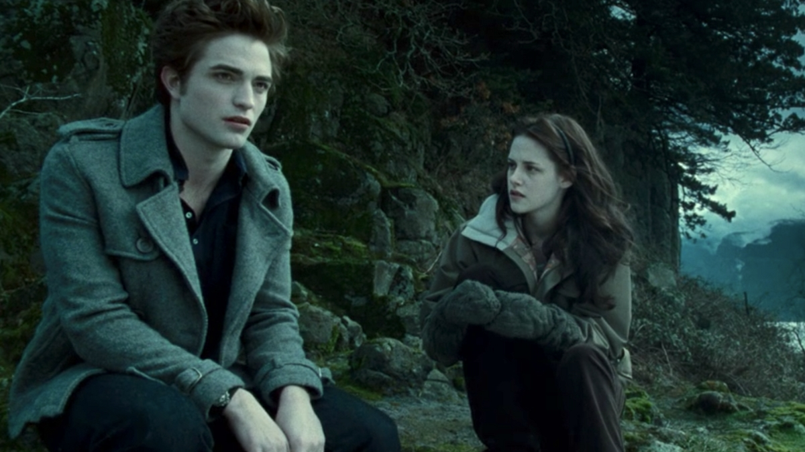

LA SAGA DE CREPUSCULO
Cuando Bella Swan se muda a un pequeño pueblo en el noroeste del Pacífico, se enamora de Edward Cullen,
un misterioso compañero de clase que revela ser un vampiro de 108 años .
Crepusculo 1
En Forks, Bella se reencuentra con Jacob Black, un adolescente nativo americano de 15 años, que vive con su padre,
Billy, en la Reserva India Quileute cerca de Forks. Hace amigos en su nueva escuela secundaria, pero encuentra particularmente
intrigantes a los hermanos Cullen, misteriosos y reservados. Sentada junto a Edward Cullen en la clase de biología el primer día de clases,
Bella nota que él parece repugnado por ella. Después de una semana de ausencia en la escuela, Edward regresa y socializa normalmente con Bella.
Unos días más tarde, ella casi es atropellada por una camioneta que derrapa en el estacionamiento de la escuela.
Edward instantáneamente se pone entre Bella y la camioneta,
deteniéndola con una mano después de cubrir una distancia de más de nueve metros.
Ella queda sorprendida e intrigada ante tal acción imposible de realizar de forma humana.
Él se niega a explicar sus acciones a ella y la advierte que no se acerque a él.
Jacob le cuenta a Bella sobre la animosidad de larga data entre los Cullen y los Quileutes, y le dice que los Cullen no tienen permitido entrar en la reserva.
Después de salvar a Bella por segunda vez de manera inesperada, Edward confirma que tiene habilidades misteriosas que recuerdan a las de un vampiro. Sin embargo, asegura que él y los demás Cullen solo consumen sangre de animales. A pesar de las advertencias de Edward, Bella se enamora de él y él la presenta a su familia vampírica. El patriarca de la familia, Carlisle Cullen, es un médico en el hospital de Forks, donde trabaja. Su esposa y matriarca de la familia, Esme, junto con Alice, Jasper, Emmett y Rosalie, son sus hijos adoptivos informales. La reacción de la familia a la presencia de Bella es mixta, preocupados de que el secreto de la familia pueda ser expuesto.
La relación entre Edward y Bella corre peligro cuando tres vampiros nómadas, James, Victoria y Laurent, llegan a la zona de Forks y son responsables de una serie de muertes que se investigan como ataques de animales. James, un vampiro rastreador con instintos de caza increíbles, se emociona por el aroma de Bella y se obsesiona con cazarla como deporte. Edward y los demás Cullen protegen a Bella, pero James la rastrea hasta Phoenix, donde se esconde con Jasper y Alice.
James atrae a Bella a una trampa en un viejo estudio de ballet. La ataca e infecta con el veneno de vampiro. Edward llega y, después de una feroz batalla, somete a James justo cuando llegan otros miembros de los Cullen. Alice, Emmett y Jasper matan a James, decapitándolo y quemándolo, mientras Edward elimina el veneno del brazo de Bella, evitando que se convierta en vampiro. En el caos que sigue, Bella sufre una pierna rota y es hospitalizada. Al volver a Forks, Edward acompaña a Bella al baile de promoción de la escuela secundaria, donde él rechaza su petición de convertirla en vampiro. Ignoran que la compañera de James, Victoria, los está vigilando en secreto, planeando vengarse por la muerte de su amado.
